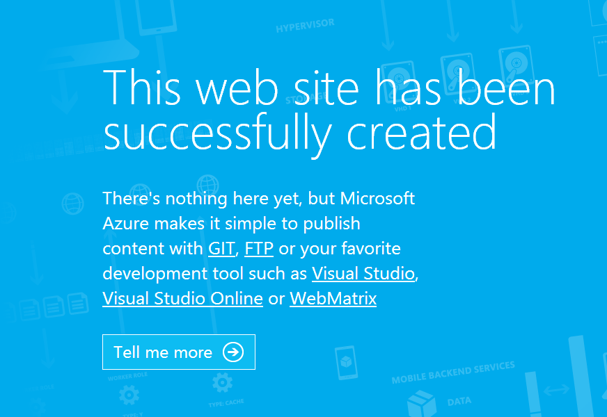
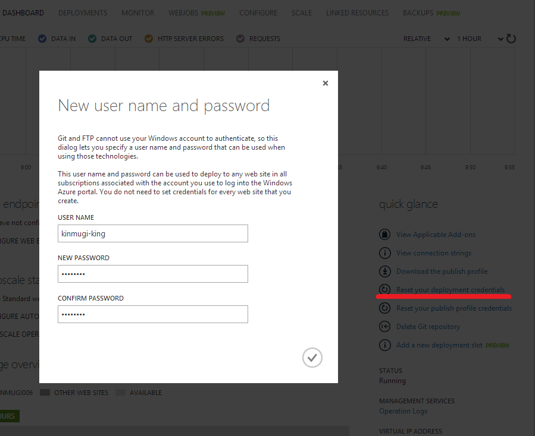
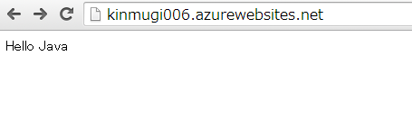
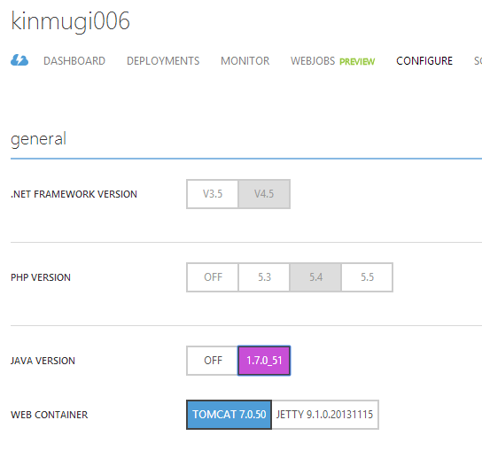

WebSites で、Java + gradle + git を使う
5/12 - 15 に行われた、TechEd North America 2014 で、待望のWebSitesのJavaサポートが発表されました。TechEdでは、AzureのJavaサポートとして、仮想マシン、クラウドサービス、WebSites の話がされていました。Azureの各種SDKはJavaは.NETと並ぶぐらい順調に進んでいるようなので今後も注目です。
その中でも、WebSitesのJavaサポートが面白かったので紹介します。
TechEdのセッションの内容は、 Java on Microsoft Azure を観てもらうことにして、一般的な開発で行われるプロセスを Java on WebSites でやってみます。
道具立て
ソースコード管理には、git を使い。ビルドには昨今流行りの gradle 、 手元で動作を確認後、git push すると、kudu の deploy hook でbuildされて Web Sites に deploy というシナリオです。deploy の最終段には、tomcat の autoDeploy を使います。

Web Sitesを作成
まず、azure cli を使うので、インストールしてください。
git repository 付きでWebSitesを作成します。（以下kinmugi006でやっていますが、同じ名前では作れないので適当に変更してください）
$ mkdir kinmugi006
$ cd kinmugi006
$ azure site create --location "Japan West" --git --gitusername kinmugi-king kinmugi006
info: Executing command site create
+ Getting sites
+ Getting locations
info: Creating a new web site at kinmugi006.azurewebsites.net
-info: Created website at kinmugi006.azurewebsites.net
+
info: Executing `git init`
info: Initializing remote Azure repository
+ Updating site information
info: Remote azure repository initialized
+ Getting site information
info: Executing `git remote add azure https://kinmugi.king@kinmugi006.scm.azurewebsites.net/kinmugi006.git`
info: A new remote, 'azure', has been added to your local git repository
info: Use git locally to make changes to your site, commit, and then use 'git push azure master' to deploy to Azure
info: site create command OK
これで、Web Sitesが作成されて、Web Sites内に git repository が用意されます。この状態では、ローカルレポジトリは下記のような設定になっています。
$ git remote -v
azure https://kinmugi-king@kinmugi006.scm.azurewebsites.net/kinmugi006.git (fetch)
azure https://kinmugi-king@kinmugi006.scm.azurewebsites.net/kinmugi006.git (push)
origin
この状態で、作成したサイトを見るには、下記のコマンドを実行します。
$ azure site browse kinmugi006
もし、 Site kinmugi006 does not exist or has no hostname のようなエラーになったら、まだ作成が完了していないと可能性があるので、少しまって再度実行してください。ほとんどの場合は、数分掛からずに作成は完了します。
このような画面が表示されるはずです。
試しに、なにか push してみましょう
まず、ポータルサイトから git のパスワードを設定します。 DASHBOARD -> Reset your deployment credentials で設定できます。
index.html という名前で、Hello Java が書かれたHTMLファイルを作成します。git add、commitして、pushします。 その時に、パスワードを聞かれるので、先ほどの設定したものを入れて下さい。
$ git push azure master
Password for 'https://kinmugi-king@kinmugi006.scm.azurewebsites.net':
Counting objects: 3, done.
Writing objects: 100% (3/3), 230 bytes | 0 bytes/s, done.
Total 3 (delta 0), reused 0 (delta 0)
remote: Updating branch 'master'.
remote: Updating submodules.
remote: Preparing deployment for commit id 'f522084597'.
remote: Generating deployment script.
remote: Generating deployment script for Web Site
remote: Generated deployment script files
remote: Running deployment command...
remote: Handling Basic Web Site deployment.
remote: KuduSync.NET from: 'D:\home\site\repository' to: 'D:\home\site\wwwroot'
remote: Deleting file: 'hostingstart.html'
remote: Copying file: 'index.html'
remote: Finished successfully.
remote: Deployment successful.
To https://kinmugi-king@kinmugi006.scm.azurewebsites.net/kinmugi006.git
* [new branch] master -> master
これで、サイトを確認すると、こんな感じで見えます。 ちなみに、 azure site browse kinmugi006 でブラウザが開きます。
Java ランタイムの設定
これで、git の設定ができたので、次のJava Runtimeの設定をします。ここでもgitのパスワード設定と同じようにポータルを使います。 Web Sitesの CONFIGURE のメニューから、JAVA VERSION をOFFから、1.7.0_51(バージョン番号は随時変わります）にして、WEB CONTAINER をTOMCAT 7.0.50 にして、SAVEを押します。
ここで、http://kinmugi006.azurewebsites.net/ を見ると、さきほどの Hello Java から下記のような画面になります。
さっき上げた、index.html では無くて、Web Sitesがデフォルトで用意しているJava Web Application が表示されています。なにが起きているのかを簡単に Kudu の画面から確認してみましょう。
https://kinmugi006.scm.azurewebsites.net/ にアクセスします。ポータルとシングルサインオンになっているので、既にログインしている場合は、そのままアクセスすることができます。
Debug Console を選んで、d:/home/site/wwwroot に行きます。すると、index.htmlと、webapps が見えます。先ほどpushしたファイルが、index.htmlで、java runtime を有効にしたときに作成されたのが、webappsです。Web Sitesで動いている tomcat のserver.xmlでは下記のように定義されています。appBase が、ここに指定されているのが確認できます。autoDeploy=”true” になっているので、appBaseにwarファイルを置くと自動展開されます。Java Runtimeを有効にする前は、IISがwwwrootをdocumet rootにして動いおりindex.htmlが見えていましたが、tomcat がhttp requestをハンドリングするようになったので、webapps/ROOTが見えるようになりました。
<Host name="localhost" appBase="d:\home\site\wwwroot\webapps" xmlBase="d:\home\site\wwwroot\"
unpackWARs="true" autoDeploy="true" workDir="${site.tempdir}">
<Valve className="org.apache.catalina.valves.AccessLogValve" directory="${site.logdir}"
prefix="site_access_log." suffix=".txt"
pattern="%h %l %u %t "%r" %s %b" />
</Host>
今回下記の設定をしてください。何故か、user.home が定義されていないので d:home にします。 JDK-4787931 : System property “user.home” does not correspond to “USERPROFILE” (win) Azureでは、IPV6をサポートしていない（今のところ）ので、IPv4 Stackのみにします。
$ azure site appsetting add JAVA_OPTS="-Duser.home=d:\home -Djava.net.preferIPv4Stack=true" kinmugi006
※想定外に話が長くなってきたので、飛ばして行きます。
git push後の自動ビルド
標準の構成では、Web Sitesの git deploy を使うと、git の sever side hook のpost-receive で、kudu.exeを起動します。 kudu.exeは、repository をupdateし、規定のdeploy scriptを呼び出します。ASP.NETのようなコンパイルが必要なアプリケーションは良しなにやり、phpなどのように、そのまま展開すれば良いものはkudusyncで同期させます。 今のところ、java用のビルド、展開スクリプトは用意されていないので、自前で作成します。
まずは、Javaのアプリの準備をします。
ビルドにgradleを使うので、 gradle公式 から、 gradle-1.12-bin.zip をダウンロードして展開します。バージョン番号が入ると面倒なので、ディレクトリ名は変更してます。 srcの下のアプリケーションは、 gradle-1.12-(src|all).zip に入っている、 webApplication/quickstart です。
ディレクトリ構成
├─gradle
│ ├─bin
│ ├─init.d
│ ├─lib
│ │ └─plugins
│ └─media
└─src
└─main
├─java
│ └─org
│ └─gradle
│ └─sample
├─resources
└─webapp
.deployemnt という下記のような内容のファイルを作成します。このファイルがあると、kudu.exe は、git update の後に、規定のスクリプトを実行せずに、 .deployemnt ファイルの設定に従います。今回は、作成したバッチを実行するだけです。
[config]
command = deploy.cmd
deploy.cmd では、gradleを実行して、出来上がったwarファルをappBaseにコピーします。
@if "%SCM_TRACE_LEVEL%" NEQ "4" @echo off
SET GRADLE_HOME=%~dp0%\gradle
SET GRADLE_HOME_CMD=%GRADLE_HOME%\bin\gradle.bat
:: Setup
:: -----
setlocal enabledelayedexpansion
IF NOT DEFINED DEPLOYMENT_SOURCE (
SET DEPLOYMENT_SOURCE=%~dp0%.
)
IF NOT DEFINED DEPLOYMENT_TARGET (
SET DEPLOYMENT_TARGET=%~dp0%\..\wwwroot
)
IF EXIST "%GRADLE_HOME_CMD%" (
call :ExecuteCmd "%GRADLE_HOME_CMD%" clean war
IF !ERRORLEVEL! NEQ 0 goto error
)
:: copy war file to wwwroot
IF NOT EXIST "%DEPLOYMENT_TARGET%"\webapps (
mkdir "%DEPLOYMENT_TARGET%"\webapps > NUL 2>&1
)
COPY /Y "%DEPLOYMENT_SOURCE%"\build\libs\kinmugi.war "%DEPLOYMENT_TARGET%"\webapps\ROOT.war
IF !ERRORLEVEL! NEQ 0 goto error
goto end
:: Execute command routine that will echo out when error
:ExecuteCmd
setlocal
set _CMD_=%*
call %_CMD_%
if "%ERRORLEVEL%" NEQ "0" echo Failed exitCode=%ERRORLEVEL%, command=%_CMD_%
exit /b %ERRORLEVEL%
:error
endlocal
echo An error has occurred during web site deployment.
call :exitSetErrorLevel
call :exitFromFunction 2>nul
:exitSetErrorLevel
exit /b 1
:exitFromFunction
()
:end
endlocal
echo Finished successfully.
ここまでできたら、git add, commit して、pushしてください。
$ git push azure master
Counting objects: 189, done.
Delta compression using up to 4 threads.
Compressing objects: 100% (178/178), done.
Writing objects: 100% (188/188), 40.11 MiB | 973.00 KiB/s, done.
Total 188 (delta 3), reused 0 (delta 0)
remote: Updating branch 'master'.
remote: Updating submodules.
remote: Preparing deployment for commit id 'c190ab30ef'.
remote: Running custom deployment command...
remote: Running deployment command...
remote: ..................
remote: 1 file(s) copied.
remote: Finished successfully.
remote: Deployment successful.
To https://kinmugi-king@kinmugi006.scm.azurewebsites.net/kinmugi006.git
f522084..c190ab3 master -> master
ただ一つだけ問題があります。最初に、WebSitesの作成したwebappsには、ROOTのディレクトリがあるのにROOT.warが無いので autoDeploy が上手く動作しません。どこかを修正してpushし直すか、ポータルから redeploy してください。問題があるのは初回だけで２回めからは前回upしたROOT.warがあるので無事自動展開されます。
最後に
kuduの仕組みが良く出来ていて特別なjava対応などが無くても、今回 WebSitesに入った httpPlatformHandler だけで、git pushしたらbuildしてdeployということが簡単に実現できました。ただ、 kudu project にある、kuduのソースはちょっと流し読みをして理解するには量が多く、動かしなら少しづつ確認するという形じゃないとなかなか動きを掴むのは難しところがあります。
下記のサイトを参考にしました
| [1] | Git のカスタマイズ - Git フック |
| [2] | kudu.exeは、Kudu.Console |
| [3] | SCM_TRACE_LEVEL = 4 にするとdeploy scriptのtraceが出る |
| [4] | Well Known Environment Variables |
| [5] | KuduSync のオプション |
| [6] | Deployment Logic Flow |
| [7] | Deployment hooks |
| [8] | Custom Deployment Scripts For Windows Azure Website Using Git Deployment |